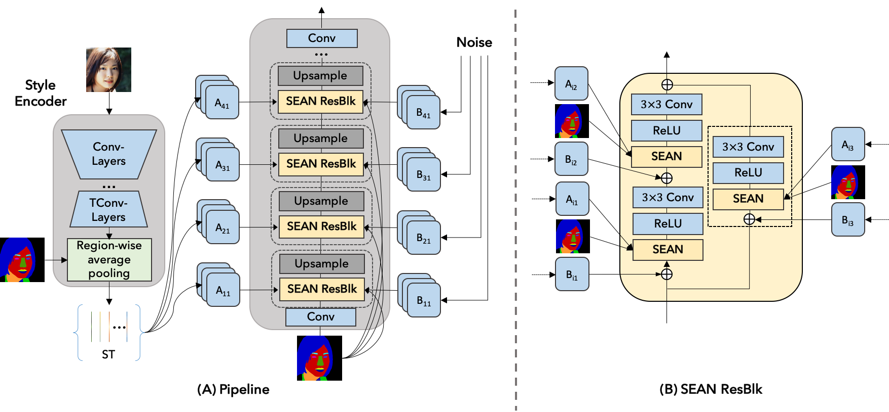
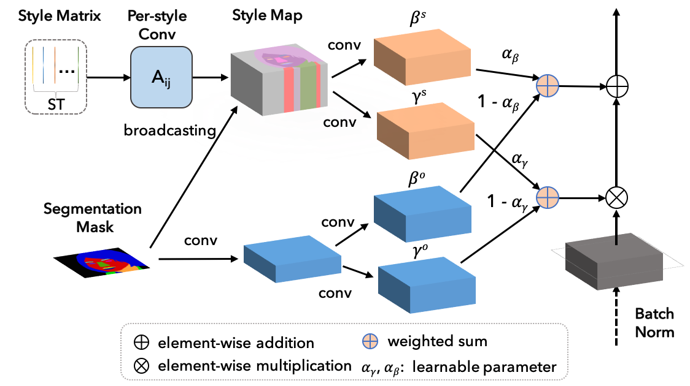
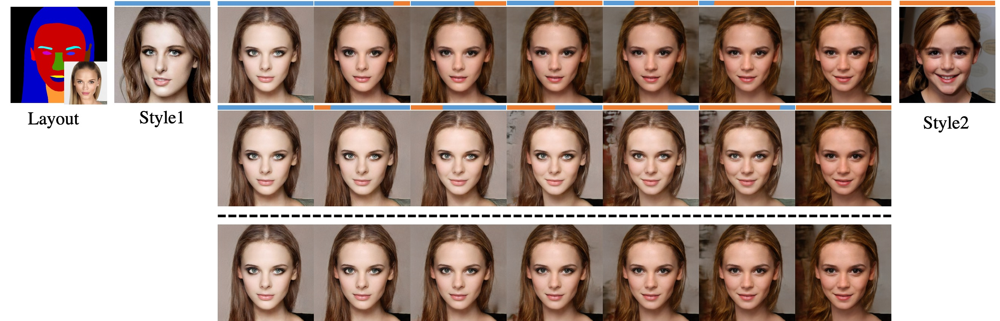

SEAN: Image Synthesis with Semantic Region-Adaptive Normalization
CVPR 2020 Oral Presentation
1KAUST
2Cardiff University
Face image editing controlled via style images and segmentation masks.
a) source images. b) reconstruction of the source image; segmentation mask shown as small inset. c - f) four separate edits;
we show the image that provides new style information on top and show the part of the segmentation mask that gets edited as small inset.
The results of the successive edits are shown in row two and three. The four edits change hair, mouth and eyes, skin tone, and background, respectively.
Abstract
We propose semantic region-adaptive normalization (SEAN), a simple but effective building block for Generative Adversarial Networks conditioned on segmentation masks that describe the semantic regions in the desired output image.
Using SEAN normalization, we can build a network architecture that can control the style of each semantic region individually, e.g., we can specify one style reference image per region. SEAN is better suited to encode, transfer, and synthesize style than the best previous method in terms of reconstruction quality, variability, and visual quality.
We evaluate SEAN on multiple datasets and report better quantitative metrics (e.g. FID, PSNR) than the current state of the art.
SEAN also pushes the frontier of interactive image editing. We can interactively edit images by changing segmentation masks or the style for any given region. We can also interpolate styles from two reference images per region.
Network Architecture

SEAN generator. (A) On the left, the style encoder takes an input image and outputs a style matrix \(\mathbf{ST}\).
The generator on the right consists of interleaved SEAN ResBlocks and Upsampling layers. (B) A detailed view of a SEAN ResBlock used in (A).

SEAN normalization. The input are style matrix \(\mathbf{ST}\) and segmentation mask \(\mathbf{M}\).
In the upper part, the style codes in \(\mathbf{ST}\) undergo a per style convolution and are then broadcast to their corresponding regions according to \(\mathbf{M}\) to yield a style map.
The style map is processed by conv layers to produce per pixel normalization values \(\gamma^s\) and \(\beta^s\).
The lower part (light blue layers) creates per pixel normalization values using only the region information similar to SPADE.
Results and Applications
1. Image Reconstruction
Visual comparison of semantic image synthesis results on the CelebAMask-HQ, ADE20K, CityScapes and
Facades dataset. We compare Pix2PixHD, SPADE, and our method.
2. Image Editing
Editing sequence on the ADE20K dataset. (a) source image, (b) reconstruction of the source image,
(c-f) variousedits using style images shown in the top row. The regions affected by the edits are shown as small insets.
3. Style Transfer
Style transfer on CelebAMask-HQ dataset.
4. Style interpolation & Style Crossover
Style interpolation. We take a mask from a source image and reconstruct with two different style images (Style1and Style2)
that are very different from the source image. We then show interpolated results of the per-region style codes.

Style crossover. In addition to style interpolation (bottom row), we can perform crossover by selecting differentstyles per ResBlk. We show two transitions in the top two rows.
The blue / orange bars on top of the images indicate whichstyles are used by the six ResBlks.
We can observe that earlier layers are responsible for larger features and later layersmainly determine the color scheme.
Bibtex
@misc{zhu2019sean,
title={SEAN: Image Synthesis with Semantic Region-Adaptive Normalization},
author={Peihao Zhu and Rameen Abdal and Yipeng Qin and Peter Wonka},
year={2019},
eprint={1911.12861},
archivePrefix={arXiv},
primaryClass={cs.CV}
}
Acknowledgement
We thank Wamiq Reyaz Para for helpful comments. This work was supported by the KAUST Office of Sponsored Research (OSR) under AwardNo. OSR-CRG2018-3730.